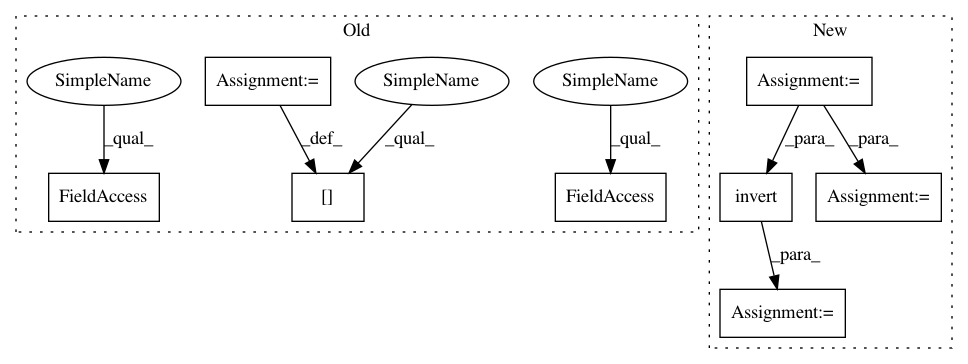

d381fb0787395076ecb8a3bd6984f52a16793fae,dataset/batch_image.py,ImagesBatch,_invert_,#ImagesBatch#Any#Any#,587
Before Change
image = image.copy()
if channels == "all":
channels = list(range(image.shape[-1]))
max_intencity = 255 if np.issubdtype(image.dtype, np.integer) else 1.
image[..., channels] = max_intencity - image[..., channels]
return image
def _salt_(self, image, p_noise=.015, color=255, size=(1, 1)):
Set random pixel on image to givan value.
After Change
if channels == "all":
image = PIL.ImageChops.invert(image)
else:
bands = list(image.split())
channels = (channels,) if isinstance(channels, Number) else channels
for channel in channels:
bands[channel] = PIL.ImageChops.invert(bands[channel])
image = PIL.Image.merge("RGB", bands)
return image
def _salt_(self, image, p_noise=.015, color=255, size=(1, 1)):
Set random pixel on image to givan value.
In pattern: SUPERPATTERN
Frequency: 3
Non-data size: 8
Instances
Project Name: analysiscenter/batchflow
Commit Name: d381fb0787395076ecb8a3bd6984f52a16793fae
Time: 2018-03-27
Author: g.ivanov@analysiscenter.ru
File Name: dataset/batch_image.py
Class Name: ImagesBatch
Method Name: _invert_
Project Name: aleju/imgaug
Commit Name: fbdb0a65bb12236593130ba70758e832a7372d94
Time: 2019-09-13
Author: kontakt@ajung.name
File Name: imgaug/augmenters/arithmetic.py
Class Name: Invert
Method Name: _augment_images
Project Name: analysiscenter/batchflow
Commit Name: 49f4e83ae4323e032bdd232e466e59b4aeceb458
Time: 2018-03-28
Author: g.ivanov@analysiscenter.ru
File Name: dataset/batch_image.py
Class Name: ImagesBatch
Method Name: _invert_
Project Name: analysiscenter/batchflow
Commit Name: d381fb0787395076ecb8a3bd6984f52a16793fae
Time: 2018-03-27
Author: g.ivanov@analysiscenter.ru
File Name: dataset/batch_image.py
Class Name: ImagesBatch
Method Name: _invert_